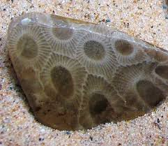
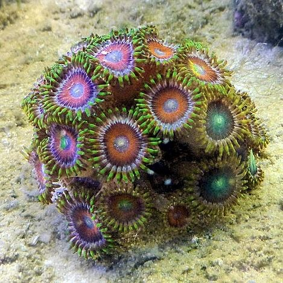

Find Petoskey Stones
What is a Petoskey Stone?
Around 350 to 400 million years ago the land we know as Michigan was located near the equator. Covered by a warm, shallow, saltwater sea, the colonial coral Hexagonaria Percarinata thrived with other marine life in tropical reefs. The earth’s plates moved and pushed Michigan north to the 45th parallel and above sea level, which created dry land formations.
More recently, about two million years ago, glacial action scraped the earth and spread the fossils across the northern Lower Peninsula, depositing major concentrations in the Petoskey area. The prehistoric fossil, unique to the Traverse Group rock strata, is called the Petoskey Stone and is Michigan’s official state stone.
A Petoskey Stone consists of tightly packed, six-sided corallites, which are the skeletons of the once-living cor-al polyps. The dark center (or eyes) were the mouth of the coral. The lines surrounding the eyes were once tentacles which brought food into the mouth. The Petoskey Stone, like the city, was named for the Ottawa Chief Pe-to-se-ga (Rising Sun) because the stones pattern looks like the rays of the sun. When dry, the stone resembles ordinary limestone but when wet or polished using lapidary techniques, the distinctive mottled pattern of the six-sided coral fossils emerges.
Where to find them
- Petoskey State Park:
- With two miles of shoreline on Little Traverse Bay (and Lake Michigan), this is a natural for novices as well as experienced rockhounds. Located on 303 acres between Petoskey and Harbor Springs off Hwy. M-119. Recreation passport required for entry.
- Magnus City Park Beach:
- Easy access to the waterfront and Petoskey Stone hunting at this park with 1,000 feet of beach.
- Bay Front & Sunset Park:
- Walking distance from Downtown near the marina.
Polish it up!

Dry Petoskey Stones usually look like ordinary limestone in a color range from light grey to dark grey. The distinctive, six-sided “rays of the rising sun” pattern pops when the rock’s surface is wet, which is why it’s easier to spy Petoskey Stones along the shore or by wading out into the water. If you’re hunting in a dry area carry a water bottle to spray likely candidates to bring out that pattern.
Polishing the Petoskey Stone at home is easily accomplished by using sand paper!
- Using a relatively coarse grade sand paper, remove the larger pits and imperfections in the stone
- Gradually use to finer grades of sandpaper to further smooth out pits and imperfections.
- Smooth out sanding marks with very fine steel wool, or wet/dry sand paper
- Polish with leather or cloth soaked in oil
Do not use a rock tumbler, as the Petoskey stone is too soft and will be damaged.
Hexagonaria Percarinata
Of course we can't know for sure what the colonial coral Hexagonaria Percarinata looked like, but many believe this is how it would have appeared 350-400 Millions Years Ago.
Featured Events
- : Protect your business from cyberattacks workshops.
- : Business After Hours - August 2021.
- : Labor Day Concert in the Park.
- : Annual Petoskey Golf outing.